The filter is a very useful feature that can help us
eliminate bad tickets. SamLotto Lottery software supports 18 advanced filters.
Our software provides filtering methods all not available in any other lottery
programs. All filters provide auxiliary tools that make it very easy to set
filter parameters.
Advanced Filter List
1. Adv
Number Count
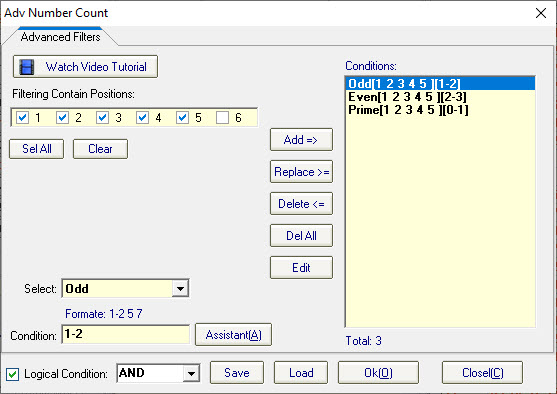
This is a collection of number count filters, you can set
Odd, Even, Prime, High and Low filters in this filter. For an introduction to
these filters please see the article on basic filters.
Click
"Add=>" button add a filter.
Click "Replace>=" button
replace the current filter.
Click "Delete<=" button delete the
current filter.
Click "Delete All" button replace the current
filter.
Click "Edit" button open text edit filter window.
Click
"Assistant" open the filters statistic chart.
Click "Ok" Save
the filter value.
Click "Save" save the filters value to
file.
Click "Load" Load the filters value from file.
[Top]
2 . Adv Number
Sum
Click
button open adv number sum window:
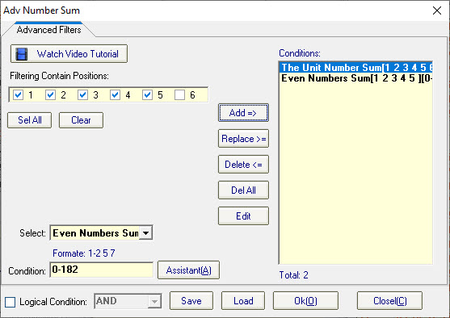
This is a
collection of number sum value filters, Number Sum, and The Unit Number Sum
filters in this filter. For an introduction to these filters please see the
article on basic filters.
Click "Add=>" button add a
filter.
Click "Replace>=" button replace the current
filter.
Click "Delete<=" button delete the current filter.
Click
"Delete All" button replace the current filter.
Click "Edit"
button open text edit filter window.
Click "Assistant" open the
filters statistic chart.
Click "Ok" Save the filter value.
Click
"Save" save the filters value to file.
Click "Load" Load the
filters value from file.
[Top]
3.Successive Number Filter
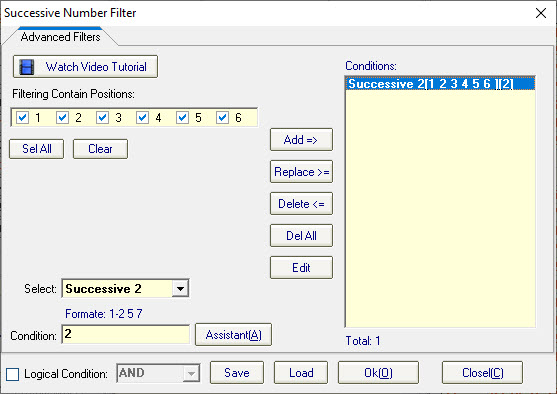
This is a
collection of successive number filters, Successive, Successive Groups, Odd
Successive, and Even Successive filters in this filter. For an introduction to
these filters please see the article on basic filters.
Successive 2
Determines Successive 2 numbers groups value can
occur in a combination, If the combination does not match the set conditions
will be filtered out.
How to calculate successive 2 number groups value?
Find all adjacent numbers amount is 2 in a combination and count all groups.
For example, 02 03 19 30 31 46, 02 03 and 30 31 are all successive 2, so
Successive 2 groups is 2.
Successive
3
Determines Successive 3 numbers groups value can occur in a
combination, If the combination does not match the set conditions will be
filtered out. How to calculate successive 3 number groups value? Find all
adjacent numbers amount is 3 in a combination and count all groups. For example,
10 11 12 23 35 41, 10 11 12 is successive 3, so Successive 3 groups is 1.
Successive 4
Determines Successive 4 numbers
groups value can occur in a combination, If the combination does not match the
set conditions will be filtered out. How to calculate successive 4 number groups
value? Find all adjacent numbers amount is 4 in a combination and count all
groups. For example, 07 20 21 22 23 49, 20 21 22 23 is successive 4, so
Successive 4 groups is 1.
Successive
5
Determines Successive 5 numbers groups value can occur in a
combination, If the combination does not match the set conditions will be
filtered out. How to calculate successive 5 number groups value? Find all
adjacent numbers amount is 5 in a combination and count all groups. For example,
15 16 17 18 19 51, 15 16 17 18 19 is successive 5, so Successive 5 groups is
1.
Click "Add=>" button add a
filter.
Click "Replace>=" button replace the current
filter.
Click "Delete<=" button delete the current filter.
Click
"Delete All" button replace the current filter.
Click "Edit"
button open text edit filter window.
Click "Assistant" open the
filters statistic chart.
Click "Ok" Save the filter value.
Click
"Save" save the filters value to file.
Click "Load" Load the
filters value from file.
[Top]
4. Range Filter
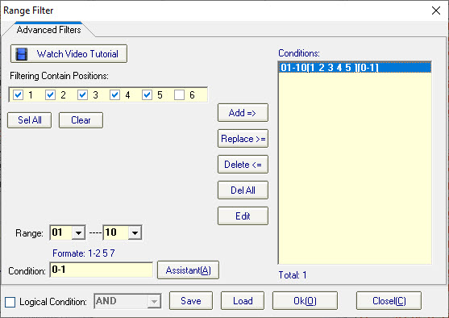
Determines a
range of numbers and how many of these numbers are allowed to occur in a
combination, If the combination does not match the set conditions will be
filtered out.
How to set range of numbers? You
can set this range arbitrarily, Like this: 01-10, 11-20, 21-40, 41-45
etc.
Example 1, range set 01-10, filter conditions set 0-1, Meaning the
numbers 01 to 10 allow 0 or 1 number to occur, combinations that do not match 0
or 1 will be filtered out.
Click "Add=>" button add a
filter.
Click "Replace>=" button replace the current
filter.
Click "Delete<=" button delete the current filter.
Click
"Delete All" button replace the current filter.
Click "Edit"
button open text edit filter window.
Click "Assistant" open the
filters statistic chart.
Click "Ok" Save the filter value.
Click
"Save" save the filters value to file.
Click "Load" Load the
filters value from file.
[Top]
5. Number Groups Filter
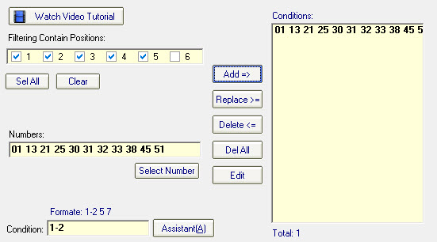
Determines some of the numbers and how many of these numbers are allowed
to occur in a combination, If the combination does not match the set conditions
will be filtered out. Number Groups Filter is more flexible than Range Filter,
any number can be used as a condition.
How to set number groups? You can
set any number combination to this filter, Like this: 27 32 34 43 52, 04-10 17
43 52, 50-59, etc.
Example 1, as shown above, enter the numbers: 01 13 21
25 30 31 32 33 38 45 51, filter conditions set 1-2, Meaning the numbers 01 13 21
25 30 31 32 33 38 45 51 allow 1 or 2 number to occur, combinations that do not
match 1 or 2 will be filtered out.
Click "Select Number" button
open select number panel.
Click "Add=>" button add a
filter.
Click "Replace>=" button replace the current
filter.
Click "Delete<=" button delete the current filter.
Click
"Delete All" button replace the current filter.
Click "Edit"
button open text edit filter window.
Click "Assistant" open the
filters statistic chart.
Click "Ok" Save the filter value.
Click
"Save" save the filters value to file.
Click "Load" Load the
filters value from file.
[Top]
6. Must Contain Numbers
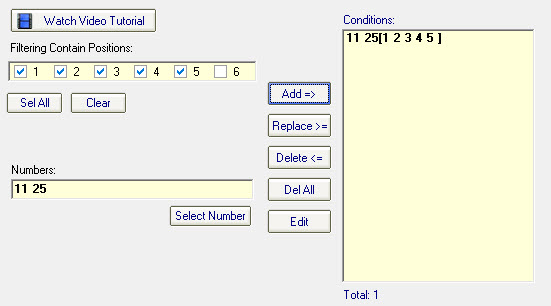
Determines some of the numbers and these numbers must
occur in a combination, If the combination does not match the set conditions
will be filtered out.
Example 1, as shown above,
enter the numbers: 11 25, Meaning the numbers 11 25 must occur, combinations
that do not include 11 and 25 will be filtered out.
Example 2, enter the
numbers: 18, Meaning the numbers 18 must occur, combinations that do not include
18 will be filtered out.
Click "Select Number" button open select
number panel.
Click "Add=>" button add a filter.
Click
"Replace>=" button replace the current filter.
Click
"Delete<=" button delete the current filter.
Click "Delete
All" button replace the current filter.
Click "Ok" Save the filter
value.
Click "Save" save the filters value to file.
Click
"Load" Load the filters value from file.
[Top]
7. Locked Nunber
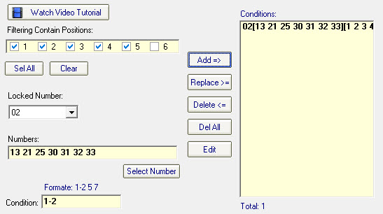
This filter is very similar to Number Groups Filter, the difference is
that this filter has to lock a number, and if the combination does not contain
the locked number, then the combination does not participate in the
filter.
Example 1, as shown above, locked number is 02, enter the
numbers: 13 21 25 30 31 32 33, filter conditions set 1-2, Meaning the numbers 13
21 25 30 31 32 33 allow 1 or 2 number to occur, combinations that do not match 1
or 2 will be filtered out. If the combination does not contain the locked number
02, this combination will be ignored and will not participate in the
filter.
Click "Select Number" button open
select number panel.
Click "Add=>" button add a filter.
Click
"Replace>=" button replace the current filter.
Click
"Delete<=" button delete the current filter.
Click "Delete
All" button replace the current filter.
Click "Edit" button open
text edit filter window.
Click "Assistant" open the filters statistic
chart.
Click "Ok" Save the filter value.
Click "Save" save
the filters value to file.
Click "Load" Load the filters value from
file.
[Top]
8. Divided by 3, 4, 5, 6, 7, 8, 9,
10 Remainder 0, 1, 2, 3, 4, 5, 6, 7, 8 , 9 Count
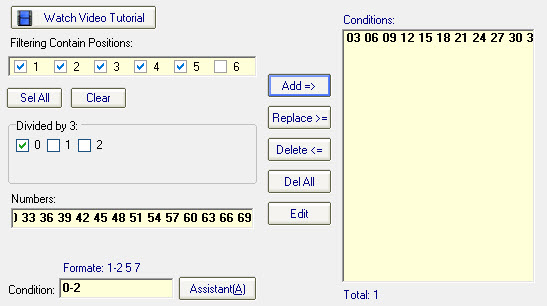
Divide all the
numbers by 3 and the remainder of 0, 1, or 2 as the number group. Other settings
are the same as the Number Groups filter.
How to calculate divided by 3
reminder of 0, 1, 2 numbers? From 1 to 70, divided by 3 reminder of 0 numbers:
03 06 09 12 15 18 21 24 27 30 33 36 39 42 45 48 51 54 57 60 63 66 69, divided by
3 reminder of 1 numbers: 01 04 07 10 13 16 19 22 25 28 31 34 37 40 43 46 49 52
55 58 61 64 67 70, and divided by 3 reminder of 2 numbers: 02 05 08 11 14 17 20
23 26 29 32 35 38 41 44 47 50 53 56 59 62 65 68. When you checked remainder 0,
remainder 1 or remainder 2, the program will automatically calculate and enter
all numbers.
For example, as shown above, checked 0, The program
automatically calculates Divided by 3 of 0 numbers: 03 06 09 12 15 18 21 24 27
30 33 36 39 42 45 48 51 54 57 60 63 66 69, filter conditions set 0-2, Meaning
the numbers 03 06 09 12 15 18 21 24 27 30 33 36 39 42 45 48 51 54 57 60 63 66 69
allow 0, 1 or 2 number to occur, combinations that do not match 0, 1 or 2 will
be filtered out.
Divided by 4 to Divided by
10
SamLotto lottery software supports a maximum Divided of 10,
calculated in the same way as Divided by 3 and Divided by 4, please refer to the
previous two filters for details.
Click "Add=>" button add
a filter.
Click "Replace>=" button replace the current
filter.
Click "Delete<=" button delete the current filter.
Click
"Delete All" button replace the current filter.
Click "Edit"
button open text edit filter window.
Click "Assistant" open the
filters statistic chart.
Click "Ok" Save the filter value.
Click
"Save" save the filters value to file.
Click "Load" Load the
filters value from file.
[Top]
16. Multiple Filter
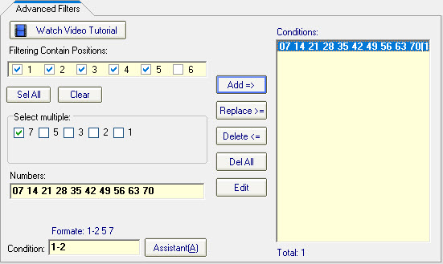
Determines Multiple
numbers and how many of these numbers are allowed to occur in a combination,
Multiples of 7, multiples of 5, multiples of 3, and multiples of 1 can be set.
Other settings are the same as the Number Groups filter.
How to
calculate the numbers for Multiples of 7, multiples of 5, multiples of 3, and
multiples of 1?
Dividing by 7, 5, 3, 2, 1 with a remainder of 0, is the
multiple of this number. From 1-70, multiples of 7 numbers: 07 14 21 28 35 42 49
56 63 70, multiples of 5 numbers: 05 10 15 20 25 30 40 45 50 55 60 65, multiples
of 3 numbers: 03 06 09 12 18 24 27 33 36 39 48 51 54 57 66 69, multiples of 2
numbers: 02 04 08 16 22 26 32 34 38 44 46 52 58 62 64 68, multiples of 1
numbers: 01 11 13 17 19 23 29 31 37 41 43 47 53 59 61 67.
For example, as
shown above, checked 7, The program automatically calculates multiples of 7
numbers: 07 14 21 28 35 42 49 56 63 70, filter conditions set 1-2, Meaning the
numbers 07 14 21 28 35 42 49 56 63 70 allow 1 or 2 number to occur, combinations
that do not match 1 or 2 will be filtered out.
Click "Add=>"
button add a filter.
Click "Replace>=" button replace the current
filter.
Click "Delete<=" button delete the current filter.
Click
"Delete All" button replace the current filter.
Click "Edit"
button open text edit filter window.
Click "Assistant" open the
filters statistic chart.
Click "Ok" Save the filter value.
Click
"Save" save the filters value to file.
Click "Load" Load the
filters value from file.
[Top]
17. Delete History Drawings
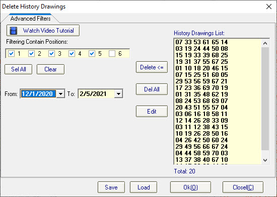
Your
combinations will be deleted if they duplicate historical drawings. You can
manually modify the range of drawings.
Click "Delete All" button
replace the current filter.
Click "Edit" button open text edit filter
window.
Click "Ok" Save the filter value.
Click "Save" save
the filters value to file.
Click "Load" Load the filters value from
file.
[Top]
18. Hot-Cold Filter
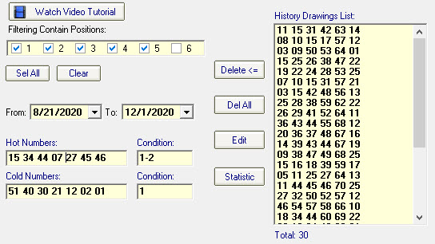
Determines how many Hot and Cold numbers are allowed to occur in a
combination, If the combination does not match the set conditions will be
filtered out.
How to set Hot-Cold Filter? You can customize the
statistical range of hot and cold numbers, and the program will automatically
calculate the hot and cold numbers. The list of hot and cold numbers can also be
modified manually, or changed to your own list of hot and cold
numbers.
For example, as shown above, i chose the last 30 drawings to
count the hot and cold numbers, and I modified the list so that I only kept the
first 7 numbers for the hot and cold numbers, hot numbers condition set: 1-2 and
cold numbers condition set 1. Meaning the hot numbers allow 1 or 2 numbers to
occur in a combination and the cold numbers allow 1 number occur in a
combination, combinations that do not match will be filtered out.
Click
"Delete All" button replace the current filter.
Click "Edit"
button open text edit filter window.
Click "Ok" Save the filter
value.
Click "Save" save the filters value to file.
Click
"Load" Load the filters value from file.
[Top]
Home
Page: http://www.samlotto.com
Support:support@samlotto.com
Copyright: © SamLotto Lottery Software
Team All rights reserved.